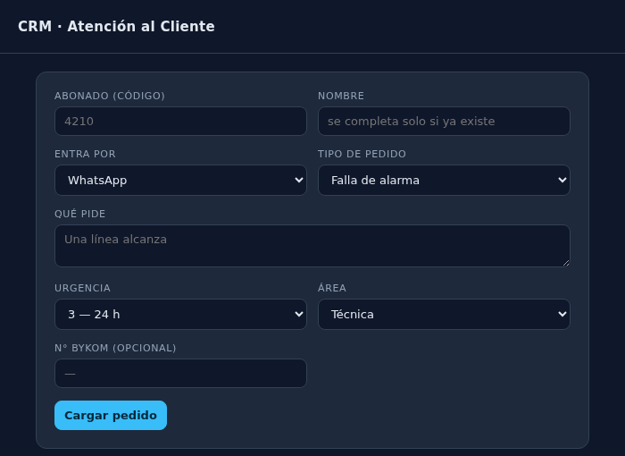
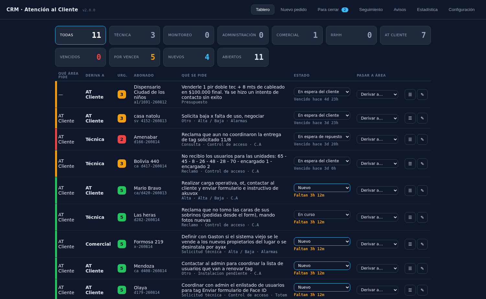
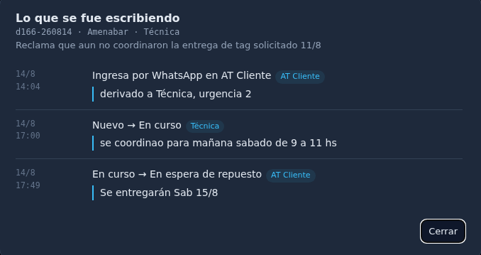
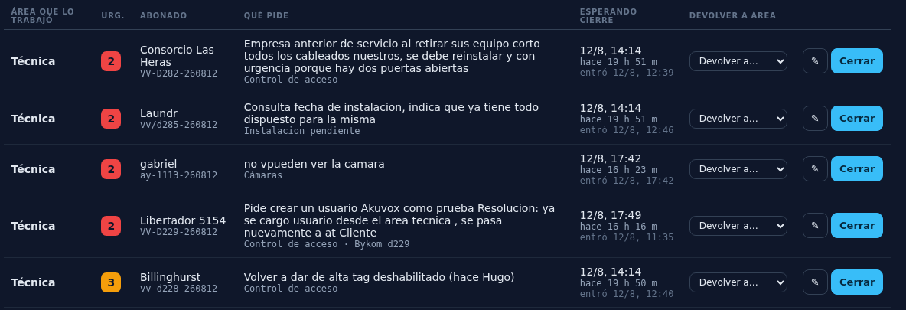
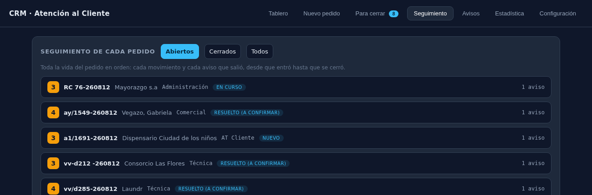

Cómo cargar, seguir, corregir y cerrar los reclamos y pedidos. Para todas las áreas.
| 1 | Entra el pedido por WhatsApp, correo o teléfono, y Atención al Cliente lo carga. |
| 2 | Atención al Cliente le pone la urgencia y lo deriva al área. Va a un área por vez. |
| 3 | El área recibe el aviso por WhatsApp y correo, en el momento. |
| 4 | El área lo actualiza en el panel: en curso, en espera, terminado. |
| 5 | Cuando termina, el área lo manda a CERRADO y queda esperando la revisión. |
| 6 | El auditor lo revisa y lo cierra con motivo, causa raíz y clave. |
Pestaña Nuevo pedido. Son seis campos y casi todos se eligen de una lista.

| Campo | Qué se pone |
|---|---|
| Abonado | El código del cliente. Si ya se cargó antes, el nombre aparece solo |
| Entra por | WhatsApp, correo o teléfono |
| Tipo de pedido | Falla de alarma, cámaras, facturación, etc. |
| Qué pide | Una línea alcanza. El detalle largo va en Bykom |
| Urgencia | Obligatoria. De ella sale el plazo y el color |
| Área | A quién se deriva |
| N° Bykom | Opcional. Es lo que une este pedido con el reclamo de Bykom |
Si el cliente ya tiene un pedido abierto, el nuevo se suma al mismo ticket. Es a propósito: así todo lo de un cliente queda junto.
| Urgencia | Plazo | Cuándo se usa |
|---|---|---|
| 1 | 2 horas | Cliente sin servicio, equipo sin comunicación, robo o siniestro |
| 2 | Hasta el fin del día | Falla parcial: una zona, un sensor, control de acceso caído |
| 3 | 24 horas | Configuraciones, alta o baja de usuario, cambio de tarjeta |
| 4 | 48 horas | Consultas, presupuestos, mejoras |
| 5 | Con fecha acordada | Instalaciones y trabajos programados. Pide fecha obligatoria |

Los botones de arriba filtran por área; los de abajo, por situación. Cada uno muestra su cantidad.
| Qué querés hacer | Cómo |
|---|---|
| Tomarlo | Cambiar el estado a En curso. Al cambiarlo se pide una nota |
| Frenar el reloj | En espera de repuesto o En espera del cliente. Ese tiempo no cuenta en contra |
| Mandarlo a otra área | Columna Pasar a área |
| Darlo por terminado | En Pasar a área, elegir CERRADO. Sale del tablero y va a revisión |
| Corregir un error de carga | El botón ✎ al final de la fila |
Cada vez que cambiás el estado se abre una ventanita para escribir qué pasó. Una línea alcanza. En el tablero, la columna Qué se pide muestra solo el pedido del cliente, para que se lea de un vistazo: todo lo que fueron escribiendo las áreas se abre con el botón ☰ de la fila.

El botón ☰ al final de la fila abre todo lo escrito, en orden.
Sirve para lo que antes había que preguntar por teléfono: “el cliente no atiende, reintentar mañana”, “falta el comunicador, se pidió al proveedor”, “coordinada visita para el jueves”.
El botón ✎ abre la corrección. Se puede cambiar el nombre del abonado, por dónde entró, el tipo, qué pide, la urgencia, el área y el N° de Bykom.
Un pedido anulado no cuenta en la estadística —no era trabajo real— pero queda guardado con su motivo, para que se vea que existió.

Los pedidos que las áreas dieron por terminados esperan acá la revisión.
Quien audita tiene dos caminos por pedido:
Mientras esperan la revisión, el reloj está frenado: el tiempo que tarde el auditor no le cuenta como demora al área.

Cada ficha se despliega y muestra todo lo que pasó, en orden.
Ahí queda registrado todo: cuándo entró y por dónde, a qué áreas pasó, cada cambio de estado, cada corrección, cada aviso que salió —con el texto exacto y si llegó— y con qué motivo se cerró. Es lo que permite reconstruir un reclamo cuando el cliente pregunta.
| Cuándo | A quién | Qué dice |
|---|---|---|
| Al cargarse el pedido | Al área que le toca | Cliente, urgencia, número y qué pide |
| Cuando queda el último 25% del plazo | Al área | Número y cuánto falta |
| Cuando vence | Al área y a Atención al Cliente | Número y hace cuánto venció |
| Todos los días a la mañana | A cada área lo suyo | Vencidos, por vencer, en plazo y con el reloj frenado |
Llegan por WhatsApp y por correo. Entre las 22 y las 8 no sale nada, salvo urgencia 1.
Lo que ya diste por terminado no te vuelve a aparecer. Cuando mandás un pedido a revisión, sale de tu tablero y queda esperando que Atención al Cliente lo cierre: desde ese momento no entra más en tus avisos ni en el resumen de la mañana.
Cada aviso trae un link al final (👉 con la dirección del panel). Tocándolo desde el celular se abre el panel directamente en ese pedido: si está abierto queda marcado en el tablero, listo para cambiarle el estado; si ya se cerró, se abre su historia en Seguimiento. La primera vez el teléfono va a avisar que el sitio no es seguro —es el certificado propio, no un problema— y hay que aceptarlo una sola vez por teléfono.
Cada área tiene su usuario y su clave. Al abrir el panel se elige el área y se entra una sola vez: la sesión queda puesta un mes en esa computadora, así que en el día a día nadie tiene que volver a escribir la clave. Arriba a la derecha se ve siempre con qué área se está trabajando, y al lado el botón Salir para cuando la comparten varias personas.
Desde ese momento, cada movimiento queda firmado: el alta, cada cambio de estado con su nota, las derivaciones, las correcciones, las anulaciones y el cierre. En Seguimiento aparece el área al final de cada línea de la historia. Eso es lo que permite, cuando algo salió mal, saber quién lo tocó y cuándo, sin tener que preguntar.
Las claves se cargan en Configuración → Usuarios: una por área, más la del administrador, que es el único que carga usuarios, toca la configuración y decide cuándo se empieza a pedir el ingreso. Las claves se guardan cifradas: no se pueden ver, solo cambiar.